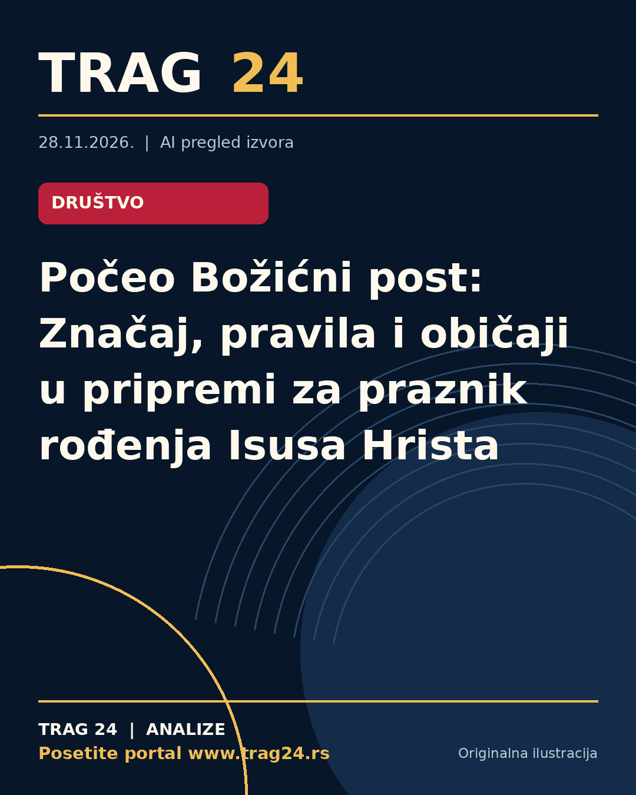

Počeo Božićni post: Značaj, pravila i običaji u pripremi za praznik rođenja Isusa Hrista

ŠTA SE DOGODILO
Srpska pravoslavna crkva je 28. novembra započela Božićni post, koji traje 40 dana i završava se na Badnji dan, 6. januara, uoči Božića. Ovaj post je jedan od četiri velika višednevna posta u pravoslavnom hrišćanstvu i priprema vernike za proslavu Hristovog rođenja.
HRONOLOGIJA
Božićni post je ustanovljen još u četvrtom veku, a njegovo trajanje od 40 dana definisano je u 12. veku. Počinje 28. novembra po novom kalendaru (15. novembra po starom), istovremeno sa crkvenim praznikom Svetih mučenika Gurija, Samona i Aviva, čije mošti i čuda su poznati vernicima. Post završava se 6. januara, na Badnji dan, kada se tradicionalno unosi badnjak i priprema posna večera.
ŠTA NAVODE IZVORI
Iz oba izvora se navodi da je svrha posta ne samo telesno uzdržavanje od određene hrane (mesa, mlečnih proizvoda i jaja), već i duhovna priprema kroz molitvu, pokajanje, praštanje i činjenje dobrih dela. Pravila ishrane uključuju post na vodi sredom i petkom, post na ulju ostalim radnim danima, a subotom i nedeljom je dozvoljena riba. Naglašava se važnost raznovrsne i uravnotežene ishrane tokom posta. Takođe se ističe obaveza da se post prilagodi ličnim zdravstvenim okolnostima i savetu lekara, naročito u slučaju trudnica, dece i starijih osoba.
ŠTA JE POTVRĐENO
Potvrđeno je da Božićni post ima duhovnu i telesnu dimenziju, trajanje od 40 dana i da završetak posta pada na Badnji dan. U toku posta vernici se pripremaju za ispovest i pričešće, pohađaju bogosluženja i pomažu potrebitima. Pravilna ishrana uključuje izbegavanje mesa, jaja i mleka, dok se ulje i riba konzumiraju u skladu sa određenim danima. Takođe, danas se istovremeno obeležava praznik Svetih mučenika Gurija, Samona i Aviva, čije molitve vernici izgovaraju za zdravlje i duhovnu snagu.
ŠTA NIJE POTVRĐENO
Izvori ne daju jedinstvene detalje o razlikama u pravilima posta u pojedinim lokalnim praksama ili mogućim izuzecima u ishrani. Takođe nije potvrđeno da li svi vernici strogo pridržavaju ista pravila posta ili se ona razlikuju u zavisnosti od individualnih i crkvenih preporuka.
ŠTA OSTАJE OTVORENO: Ostaje otvoreno kako pojedinačni vernici i zajednice u praksi balansiraju tradicionalna pravila posta sa savremenim zdravstvenim i životnim okolnostima. Takođe, nije pružen detaljniji uvid u moguće varijacije u postu u različitim pravoslavnim jurisdikcijama van SPC. Dalja pitanja ostaju u vezi sa preciznim načinom duhovne pripreme i iskustvima vernika tokom trajanja posta.
Izvori
- https://www.danas.rs/zivot/poceo-bozicni-post-pravila-ishrana-obicaji/
- https://013info.rs/srbija/poceo-bozicni-post-koliko-traje-i-koja-su-pravila-ishrane/
- https://mondo.rs/Info/Drustvo/a2314691/obicaji-i-verovanja-za-pocetak-bozicnog-posta.html
Ova analiza je pripremljena uz pomoć veštačke inteligencije na osnovu javno dostupnih izvora. Navodi izvora nisu nužno nezavisno potvrđeni.